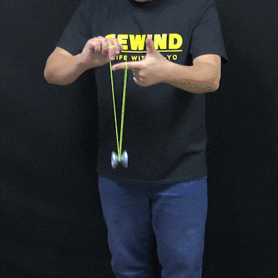

Truques iniciais
Estes são truques que todos que estão começando devem saber fazer.
Bind
jogue e o yo-yo para que ele durma (jire em sua propria haste enquanto no fim da corda),
levante o braço que esta segurando o yo-yo e posicione o indicador da mão livre na parte de traz da corda,
abaixe o braço que esta segurando o yoyo e passe a corda por baixo do yo-yo e levante o braço que esta segurando o yoyo novamente até o meio da corda,
agora pince a corda e a mova para perto do yo-yo, remova seu dedo da corda e o yo-yo retornara para você

Pendulo
O pendulo é um truque que é mais simples do que parece. Começe colocando o yo-yo para dormir (movimento explicado na sessão sobre o bind)
e então coloque a mão livre na parte de traz da corda e levantea, com a mão que esta segurando o yo-yo você ira segurar
a corda. com a mão livre que esta levantada, abra a mão e faça uma abertura na corda. por fim passe a abertura pelo yo-yo.
Este tipo de truque onde a corda não faz contato direto com o yo-yo enquanto ele gira pode ser realizada enquanto o yo-yo não esta girando para fins de treino
Lançamento
ATENÇÃO, esse tipo de truque pode causar lesões leves ou até sérias se feito de maneira incorreta
Enquanto segura o yo-yo, flexione seu braço e o vire-o para baixe, agoira lançe o yo-yo diagonalmente em direção ao chão
de forma que ele começe a subir quando a corda chegar ao fim. De um leve puxão no yo-yo e vire rapidamente sua mão
para pega-lo (fique atento pois ele voltara em velocidade rapida)
*exemplo de possiveis acidentes que podem
acontecer durante o truque*
Trapézio
Este truque pode parecer simples, mas não subestido a dificuldade de executa-lo de modo correto.
Primeiro, jogue o yo-yo de forma lateral em direção a sua mão livre, em seguida, coloque o indicador de sua
mão livre na tragetória da corda, proximo ao yo-yo. Se executado de maneira correta, o yo-yo caira na propria corda.

Lind Loop
Se você ja tiver facilidade com o trapézio, este truque sera bem simples, já que consiste de fazer o trapézio duas vezes seguidas.
Primeiro faça o truque do Trapézio e em seguida, rapidamente puxe a corda nela mesma com o indicador, de modo que o yo-yo caia na corda novamente.
Elevador
Uma das manobras mais simples, primeiro jogue o yo-yo, agora coloque o indicador da mão livre na parte de traz da corda e puxe para cima.
encoste o yo-yo na corda, e agora, quanto você abaixar a mão que esta segurando o yo-yo, ele ira subir, e se abaixar a mão, ele ira descer.
Brain Twister
Jogue o yo-yo e coloque o indicador da mão livre na parte de traz da corda, encaixe a corda na parte de traz do yo-yo,
agora use o dedo médio da mão que esta segurando o yo-yo para impulsionar o yo-yo, fazendo com que ele de um giro, então apenas desencaixe a corda do yo-yo.